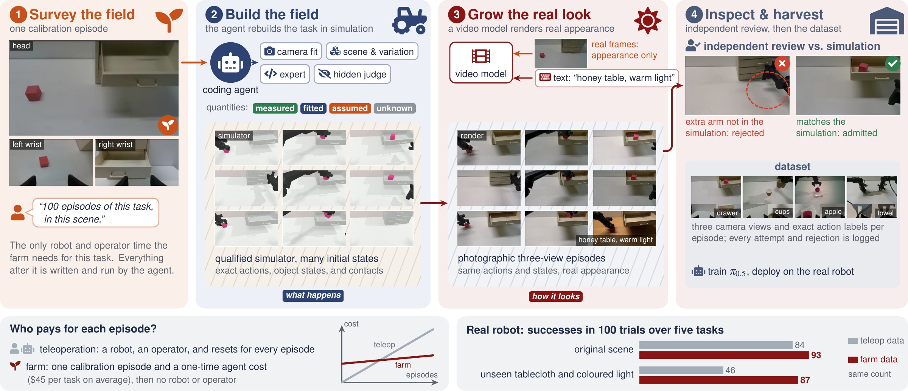
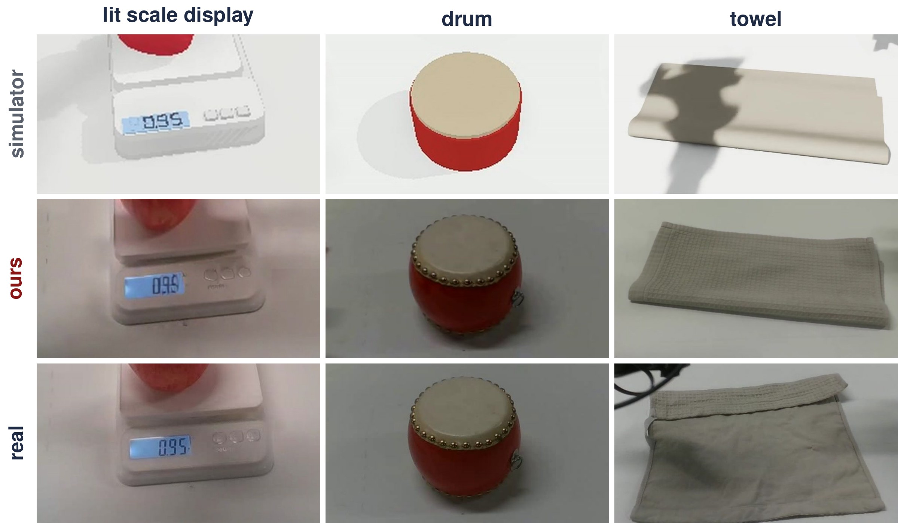
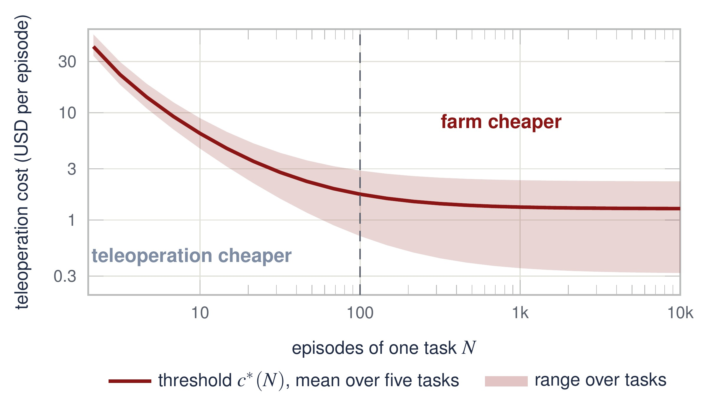

Abstract
Teleoperation remains the default way to collect robot demonstrations, but every episode costs robot and operator time, and every new task starts over. We ask whether a coding agent can do the teleoperator's job at lower cost. In our agentic data farm, DataFarm, the agent receives a data request and one calibration episode, a short recording of the robot in the target scene used only to identify the scene and cameras. It rebuilds the task in simulation, writing the scene, an expert controller, and a success judge. The simulator produces rollouts with exact actions. A video model conditioned on real images renders each rollout as a photographic episode. Because agents write both the expert and the checks that grade it, and the video model may alter the scene, correctness cannot rest on the producer's own judgment. We therefore separate certification from production: the expert is scored by a judge it never sees on held-out initial states, and independent reviewers compare every rendered episode with its simulated state before it enters the dataset. On five real-robot tasks, policies trained only on farm data matched policies trained on the same number of teleoperated episodes (93 vs. 84 successes in 100 trials) and kept 87 successes under an unseen tablecloth and coloured light, where the teleoperation-trained policies fell to 46. Adapting a new task cost the agent $45 on average without human intervention, and for 100 episodes of a task the farm is cheaper than teleoperation whenever a teleoperated episode costs more than $0.71–2.89.
Real-robot results
π0.5 policies trained on 100 episodes from each source, 20 trials per task and condition, on a dual-arm PiPER robot. Sim + DR renders the same simulated trajectories as DataFarm with the simulator and domain randomization, so the gap between them isolates rendering with real images. The farm data mix renders of the original scene with text-varied tabletops and lighting; the test tablecloths appear in no training set.
Trials under an unseen tablecloth and coloured light
Neither training set contains the tablecloth or the light. Left: policy trained on teleoperated data. Right: policy trained only on farm data. Real-time, no cuts within a clip.
The farm
The agent does the teleoperator's job by a different route: it writes the task once, and the farm produces every further episode.


The data
Each farm episode is a simulator rollout re-rendered as photographic video: same actions, same objects, same contacts. Left and right are aligned frame by frame.
New tabletops and lighting
Rollouts rendered with appearance that differs from the calibration scene; the inset is the simulator video of the same rollout.
Real, simulated, domain-randomized, and farm episodes

Do renders keep the simulated motion?
Action labels stay valid only if the video shows the motion the simulator executed. We compare the optical flow of each render with that of its untextured simulator video.

Objects that are hard to simulate

Cost
Teleoperation pays for every episode. The farm pays once per task, then only for simulation, rendering, and review.

BibTeX
@article{zhang2026datafarm,
title={PyRUA-DataFarm: GPT-6 Astra as a Cost-Efficient Teleoperator},
author={Zhang, Kewei and Ma, Juncheng and Lv, Guodong and Zhang, Hongyu and Liu, Yichen and Hou, Jiaqi and Huang, Ye and Zhang, Chuanrui and Chen, Yuxuan and Si, Ruiyang and Huang, Wenbo and Gong, Shukai and Ruan, Feixiang and Zhang, Yintianrun and Zhai, Xuanran and Deng, Yufan and Xie, Enze and Wang, Duomin and Zhou, Daquan},
journal={arXiv preprint},
year={2026}
}